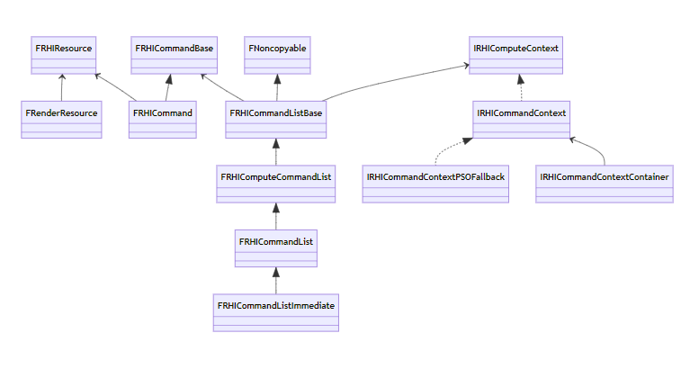

UE-RHI (Render Hardware Interface渲染硬件接口)
本文摘抄自深度剖析虚幻渲染体系-RHI
- 封装了众多图形API（DirectX、OpenGL、Vulkan、Metal）之间的差异，对Game和Renderer模块提供了简便且一致的概念、数据、资源和接口
- RHI线程，它负责将渲染线程Push进来的RHI中间指令转译到对应图形平台的GPU指令
- 最初的RHI是基于D3D11=DirectX11 API设计而成，包含了资源管理和命令接口
二-RHI基础
RHI资源相关的类
(1)FRenderResource
资源运送的流程：游戏线程->渲染线程->RHI线程
FRenderResource是渲染线程的渲染资源代表，由渲染线程管理和传递，介于游戏线程和RHI线程的中间数据。
在渲染线程中，FRenderResource 定义了一组渲染资源的行为，FRenderResource的子类就是对应地将RHI的子类资源封装起来，以便渲染线程将游戏线程的数据和操作传递到RHI线程（或模块）中。
(2)FRHIResource
（类继承架构：FRHIResource-> RHI中的各个子类->图形API中的对应子类）
- FRHIResource抽象了GPU侧的资源，也是众多RHI资源类型的父类。
- FRHIResource提供了几种功能：引用计数、延迟删除及追踪、运行时数据和标记。
- FRHIResource的种类和子类都非常多，可分为状态块、着色器绑定、着色器、管线状态、缓冲区、纹理、视图以及其它杂项。
- FRHIResource的子类会被图形API中的子类对应继承实现API的封装。
RHI命令相关的类
(3)FRHICommand
- FRHICommand是RHI模块的渲染指令基类，这些指令通常由渲染线程通过命令队列Push到RHI线程，在合适的时机由RHI线程执行。
- FRHICommand同时又继承自FRHICommandBase，FRHICommandBase有指向下一个节点的Next变量，意味着FRHICommandBase是命令链表的节点。
(4)FRHICommandList
（类继承架构：FRHICommandListBase-> FRHIComputeCommandList->FRHICommandList->FRHIComputeCommandList）
- FRHICommandListBase定义了命令队列所需的基本数据（命令列表、设备上下文）和接口（命令的刷新、等待、入队、派发等，内存分配）。
- FRHIComputeCommandList定义了计算着色器相关的接口、GPU资源状态转换和着色器部分参数的设置。
- FRHICommandList是RHI的指令队列，用来管理、执行一组FRHICommand的对象。FRHICommandList定义了普通渲染管线的接口，包含VS、PS、GS的绑定，图元绘制，更多着色器参数的设置和资源状态转换，资源创建、更新和等待等等。
- FRHICommandListImmediate封装了立即模式的图形API接口，在UE渲染体系中被应用得非常广泛。它额外定义了资源的操作、创建、更新、读取和状态转换接口，也增加了线程同步和GPU同步的接口。
三-RHIContext, DynamicRHI
目测讲述的是RHI和图形API之间的上下文，还有通过DynamicRHI让图形API的接口动态绑定
(1)IRHICommandContext
- IRHICommandContext是RHI的命令上下文接口类，定义了一组图形API相关的操作。IRHICommandContext的接口和FRHICommandList的接口高度相似且重叠
(2)IRHICommandContextContainer
- IRHICommandContextContainer就是包含了IRHICommandContext对象的类型,相当于存储了一个或一组命令上下文的容器，以支持并行化地提交命令队列，只在D3D12、Metal、Vulkan等现代图形API中有实现。
(3)FDynamicRHI
- FDynamicRHI是由动态绑定的RHI实现的接口，它定义的接口和CommandList、CommandContext比较相似
(4)RHI 体系总览
- 上文详细阐述了RHI体系下的基础概念和继承体系，包含渲染层的资源、RHI层的资源、命令、上下文和动态RHI

四-RHI机制
(1)RHI命令执行
（类继承架构：FRHICommandListExecutor-> GRHICommandList）
FRHICommandListExecutor
- FRHICommandListExecutor负责将Renderer层的RHI中间指令转译（或直接调用）到目标平台的图形API
- FRHICommandListExecutor处理了复杂的各类任务，并且要判定任务的前序、等待、依赖关系，还有各个线程之间的依赖和等待关系。
- 代码中涉及到了两个重要的任务类型：派发RHI线程任务和执行RHI线程任务
GRHICommandList
(2)ImmediateFlush
描述了不同的刷新策略，通过枚举变量进行区分。
(3)并行渲染
FParallelCommandListSet
并行渲染队列存放并行渲染的命令集合
(4)Pass渲染
普通Pass渲染
Subpass渲染
- 移动端渲染策略：上一个Pass渲染处理的纹理，立即被下一个Pass使用，并且下一个Pass只采样像素位置自身的数据，而不需要采样邻域像素的位置。这种情况就符合了Subpass的使用情景。使用Subpass渲染的纹理结果只会存储在Tile Memory中，在Subpass结束后不会写回VRAM，而直接提供Tile Memory的数据给下一个Subpass采样读取。这样就避免了传统Pass结束写回GPU显存以及下一个Pass又从GPU显存读数据的耗时耗电操作，从而提升了性能。
(5)RHI资源管理（见博客原文）
(5)多线程渲染
UE的渲染流程中，最多存在4种工作线程：游戏线程（Game Thread）、渲染线程（Render Thread）、RHI线程和GPU（含驱动）。
游戏线程是整个引擎的驱动者，提供所有的源数据和事件，以驱动渲染线程和RHI线程。游戏线程领先渲染线程不超过1帧，更具体地说如果第N帧的渲染线程在第N+1帧的游戏线程的Tick结束时还没有完成，那么游戏线程会被渲染线程卡住。反之，如果游戏线程负载过重，没能及时发送事件和数据给渲染线程，也会导致渲染线程卡住。
渲染线程负责产生RHI的中间命令，在适当的时机派发、刷新指令到RHI线程。因此，渲染线程的卡顿也可能导致RHI的卡顿。
RHI线程负责派发（可选）、转译、提交指令，且渲染的最后一步需要SwapBuffer，这一步需要等待GPU完成渲染工作。因此，渲染GPU的繁忙也会导致RHI线程的卡顿。
除了游戏线程，渲染线程、RHI线程和GPU的工作都是存在间隙的，即游戏线程提供给渲染任务的时机会影响渲染工作的密度，也会影响到渲染的时间，小量多次会浪费渲染效率。